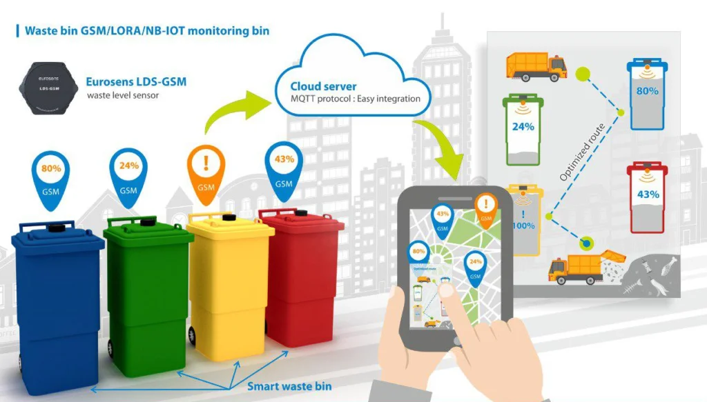

Gestão de Residuos
Definição
Gestão de resíduos inteligentes refere-se ao uso de tecnologias e estratégias inovadoras para
coletar, separar, monitorar, reciclar e descartar resíduos de forma mais eficiente e
sustentável.
Ela envolve sensores em lixeiras, sistemas de coleta automatizados, aplicativos
de
rastreamento, inteligência artificial para análise de dados e políticas públicas integradas que
ajudam a reduzir o impacto ambiental e a melhorar a qualidade de vida nas cidades.
- Sensoriamento Inteligente:
Lixeiras equipadas com sensores detectam o nível de enchimento, otimizando a coleta e evitando transbordamentos. - Monitoramento em Tempo Real:
Permite acompanhar o status dos resíduos (orgânico, reciclável, perigoso) por meio de plataformas digitais com alertas automáticos. - Coleta Otimizada com Roteirização:
Algoritmos definem rotas eficientes para os caminhões de coleta, economizando combustível e reduzindo emissões. - Classificação Automatizada:
Sistemas com inteligência artificial separam resíduos por tipo (plástico, papel, metal), aumentando a taxa de reciclagem. - Integração com Aplicativos e Cidadãos:
Aplicativos permitem que moradores acompanhem a coleta, recebam notificações e aprendam como descartar corretamente.
Componentes e Funções
- Maior eficiência na coleta e destinação dos resíduos
- Redução de custos operacionais
- Monitoramento e controle em tempo real
- Aumento da taxa de reciclagem
- Sustentabilidade ambiental e urbana